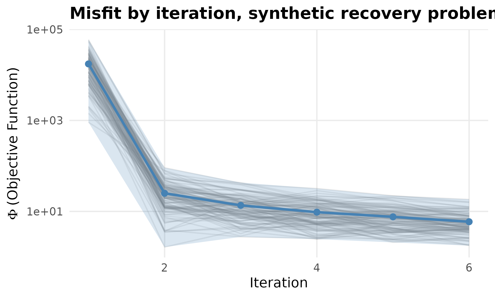

Why
My simulator is APSIM, one run takes about a minute, and I want to calibrate it from R against a handful of seasons of measured yield. The question is: how do I wire a simulator like that into PESTO without paying a file round-trip on every realisation, and what do I have to get right for the posterior that comes back to be worth anything? This vignette answers both. The wiring is a typed forward-model contract that any R function can satisfy, demonstrated end to end on problems that run in seconds; the thing to get right is the observation standard deviation, and the middle of this vignette measures exactly how wrong an answer becomes when it is set the way most people first set it.
What
pesto_ies_callback()
is the in-process driver. pesto_ies() shells out to
the pestpp-ies binary, which writes and reads control,
ensemble and observation files between every realisation; for an R
forward model, whether that is an apsimx wrapper for APSIM,
a bridge to another language, or a fast synthetic test problem, the file
round-trip is pure overhead. The callback driver keeps the same C++
ensemble kernel (ensemble_solution(),
after Chen and Oliver 2013) and drives the outer loop in R, calling the
forward model in process. For APSIM this is the difference between
re-reading an .apsimx file for every realisation and
holding the model in memory across the whole ensemble.
pesto_forward_model()
is the typed contract a forward model travels in. A bare
function(theta) -> obs is the quickest way in and
carries no metadata: the driver cannot know the output dimension in
advance, cannot run realisations in parallel, and cannot express a
failure budget. The contract object declares all three, and pesto_evaluate()
runs it. apsim_callback()
builds one for APSIM through the apsimx package: a working
copy of a template per realisation, parameter edits by a
param_map, a run, and an extraction step.
pesto_multifidelity_model()
stacks an ordered set of fidelity levels, cheapest first, so early
iterations can explore on a coarse model and late ones sharpen against
the expensive one; mf_control_variate()
is the variance-minimising affine correction that lifts cheap outputs
toward expensive ones. ode_forward_model()
and its two specialisations, crop_growth_forward_model()
and seir_forward_model(),
are ready-made contracts for the large class of simulators that are a
small system of ordinary differential equations rather than an
executable. pesto_ies_filter()
assimilates time-ordered observation windows one after another rather
than in one batch, which is what an in-season update needs.
Two diagnostics run throughout. ensemble_spread_ess()
is recorded on every iteration, and pesto_abstention()
is the typed decline a reliability gate returns in place of a
result.
Do
A synthetic recovery example
The problem below is synthetic: a linear forward model at a known truth with Gaussian noise, which is the cheapest way to check that a driver recovers what it should before a real simulator is attached.
set.seed(20260516L)
npar <- 4L
nobs <- 8L
nreal <- 120L
sigma <- 0.05
G <- matrix(rnorm(nobs * npar), nobs, npar)
theta_true <- c(1.0, -0.5, 2.0, 0.25)
y <- as.numeric(G %*% theta_true) + rnorm(nobs, sd = sigma)
names(y) <- paste0("o", seq_len(nobs))
# Forward model: any function taking an (nreal x npar) matrix and returning
# an (nreal x nobs) matrix.
forward <- function(theta) theta %*% t(G)
prior <- matrix(rnorm(nreal * npar), nreal, npar,
dimnames = list(NULL, paste0("p", seq_len(npar))))Six iterations. lambda is left at its default: under the
default ES-MDA scheme the Marquardt damping is the inflation
factor (alpha = lambda + 1) and is set by the schedule, so
it is chosen for you rather than fixed by hand (see ?pesto_ies_callback).
fit <- pesto_ies_callback(
forward_model = forward,
prior_ensemble = prior,
obs = y,
obs_sd = sigma,
noptmax = 6L,
seed = 42L,
verbose = FALSE
)
prior_rmse <- sqrt(mean((colMeans(prior) - theta_true)^2))
post_mean <- colMeans(as.matrix(fit$par_ensemble[, -1L]))
post_rmse <- sqrt(mean((post_mean - theta_true)^2))
round(c(prior_rmse = prior_rmse, posterior_rmse = post_rmse), 4)
#> prior_rmse posterior_rmse
#> 1.1300 0.0231
vec_mean_phi <- vapply(fit$iterations, `[[`, numeric(1L), "mean_phi")
round(vec_mean_phi, 3)
#> [1] 17452.123 25.006 13.566 9.622 7.592 5.924
tab_phi_wide <- data.table::dcast(
fit$phi, iteration ~ realisation, value.var = "phi"
)
plot_phi(tab_phi_wide, show_reals = TRUE,
title = "Misfit by iteration, synthetic recovery problem")
Objective function by iteration on the synthetic recovery problem. The ribbon spans the ensemble’s minimum to maximum misfit and each faint line is one realisation; the mean falls by nearly three orders of magnitude between the first and second iterations and then declines slowly.
The forward-model contract
pesto_forward_model() wraps the same callable in a typed
contract that carries the metadata a bare function cannot. It is the
single object both the native callback driver here and the classic
.pst path are built to honour, so a forward model travels
between modes unchanged.
fm <- pesto_forward_model(
fn = forward,
n_obs = nobs,
param_names = paste0("p", seq_len(npar)),
on_failure = "na"
)
# A contract object is evaluated directly with pesto_evaluate(); the
# returned matrix carries the per-realisation failure count.
sim <- pesto_evaluate(fm, prior)
c(realisations = nrow(sim), outputs = ncol(sim),
failures = attr(sim, "n_failures"))
#> realisations outputs failures
#> 120 8 0
# Passing the contract to the driver is equivalent to passing the bare
# function: the bare form is auto-wrapped internally.
fit_typed <- pesto_ies_callback(fm, prior, y, sigma, noptmax = 6L,
seed = 42L, verbose = FALSE)
identical(
as.matrix(fit_typed$par_ensemble[, -1L]),
as.matrix(fit$par_ensemble[, -1L])
)
#> [1] TRUEParallel, fault-tolerant ensembles
For an expensive forward model, an APSIM ensemble especially, the
realisations within one iteration are embarrassingly parallel. Build the
contract with parallel = "multicore" and the evaluation
engine dispatches rows across forked workers through
parallel::mclapply(). For reproducible draws, set an
"L'Ecuyer-CMRG" generator first, so each realisation
receives an independent stream.
RNGkind("L'Ecuyer-CMRG")
set.seed(42L)
fm_par <- pesto_forward_model(
fn = forward,
n_obs = nobs,
parallel = "multicore",
n_cores = 4L
)
fit_par <- pesto_ies_callback(fm_par, prior, y, sigma, noptmax = 6L)The chunk above is shown rather than run, because forking inside a
vignette build is not portable. A custom map_fn, any
function shaped like lapply, is the escape hatch for a
cross-platform or cluster backend. Failures are governed by
on_failure, where "na" tolerates and
"stop" aborts, and by max_fail_frac, which
aborts once the fraction of failed realisations in a single evaluation
exceeds the budget: a guardrail against an ensemble collapsing
silently.
The number that decides whether to believe the answer
The single most consequential argument is obs_sd, the
observation standard deviation, which sets the weights w = 1 / \sigma_{\mathrm{obs}}. It is also the
easiest to get wrong in a way that fails silently. The failure mode is
over-determination: conditioning the ensemble on a likelihood
far tighter than the data deserve. The smoother then drives every
realisation onto the same point, the posterior spread collapses, and the
run reports an answer whose credible interval is far too narrow to be
credible.
The usual route into the trap is statistical rather than a typo.
Suppose each target observation is itself the mean of m field replicates. The replicate
spread, the genuine measurement-plus-process noise a single modelled
value must match, is \sigma. The
standard error of that mean is \sigma
/ \sqrt{m}, smaller by a factor of \sqrt{m} and shrinking further as more plots
are averaged. Passing the standard error as obs_sd tells
the smoother the data pin the model roughly \sqrt{m} times more sharply than they do. The
forward model cannot be that right, so the ensemble has nowhere to go
but onto a single collapsed point.
m <- 40L
obs_se <- sigma / sqrt(m) # the standard error of a 40-replicate mean
fit_ok <- pesto_ies_callback(
forward, prior, y,
obs_sd = sigma, # field-realistic replicate spread
noptmax = 6L, seed = 42L, verbose = FALSE
)
fit_collapsed <- pesto_ies_callback(
forward, prior, y,
obs_sd = obs_se, # the over-precise likelihood, the trap
noptmax = 6L, seed = 42L, verbose = FALSE
)The collapse does not announce itself in the posterior mean. On this linear-Gaussian problem both runs recover the truth to three figures. It announces itself in the posterior spread, and in whether the credible interval still covers the truth.
spread <- function(fit) {
mean(apply(as.matrix(fit$par_ensemble[, -1L]), 2L, sd))
}
coverage_90 <- function(fit, truth) {
pe <- as.matrix(fit$par_ensemble[, -1L])
lo <- apply(pe, 2L, quantile, 0.05)
hi <- apply(pe, 2L, quantile, 0.95)
mean(truth >= lo & truth <= hi) # fraction of params inside the band
}
tab_two <- data.frame(
Case = c("field-realistic", "over-precise (SE of a 40-replicate mean)"),
`obs_sd` = c(sigma, obs_se),
`Mean posterior SD` = c(spread(fit_ok), spread(fit_collapsed)),
`Coverage of the 90% band (%)` = 100 * c(
coverage_90(fit_ok, theta_true), coverage_90(fit_collapsed, theta_true)
),
check.names = FALSE
)| Case | obs_sd | Mean posterior SD | Coverage of the 90% band (%) |
|---|---|---|---|
| field-realistic | 0.0500 | 0.0341 | 100 |
| over-precise (SE of a 40-replicate mean) | 0.0079 | 0.0054 | 50 |
Where the boundary is
Two cases show that the failure exists. A sweep shows where it
starts. The block below repeats the run at replicate counts from 1 to
160, each time passing the standard error of an m-replicate mean as obs_sd, and
records two things: the mean posterior standard deviation, and how far
the posterior mean sits from the truth measured in its own posterior
standard deviations. A calibrated posterior puts the truth within about
one of its own standard deviations; a collapsed one puts it many.
vec_m <- c(1L, 2L, 5L, 10L, 20L, 40L, 80L, 160L)
tab_boundary <- data.table::rbindlist(lapply(vec_m, function(mm) {
fit_m <- pesto_ies_callback(
forward, prior, y, obs_sd = sigma / sqrt(mm),
noptmax = 6L, seed = 42L, verbose = FALSE
)
pe <- as.matrix(fit_m$par_ensemble[, -1L])
par_sd <- apply(pe, 2L, sd)
data.table::data.table(
m = mm,
obs_sd = sigma / sqrt(mm),
post_sd = mean(par_sd),
z = mean(abs(colMeans(pe) - theta_true) / par_sd),
coverage = coverage_90(fit_m, theta_true)
)
})) # ends the sweep over replicate counts
ggplot2::ggplot(
tab_boundary, ggplot2::aes(x = m, y = z, colour = coverage)
) +
ggplot2::geom_hline(yintercept = 1, linetype = "dashed",
colour = "grey40") +
ggplot2::geom_line(colour = "grey60", linewidth = 0.8) +
ggplot2::geom_point(size = 3.4) +
ggplot2::scale_x_log10() +
ggplot2::scale_y_log10() +
ggplot2::scale_colour_viridis_c(
name = "90% coverage", limits = c(0, 1), end = 0.9
) +
ggplot2::labs(
x = "replicates averaged into each observation (log scale)",
y = "distance from truth, in posterior SDs (log scale)",
title = "How over-precise an obs_sd can be before the answer misleads"
) +
ggplot2::theme_minimal(base_size = 12)![The over-determination boundary. The horizontal axis is the number of replicates whose standard error was passed as obs_sd; the vertical axis is how far the posterior mean sits from the known truth, measured in posterior standard deviations. Point colour is the fraction of parameters whose 90 per cent credible band still covers the truth. The dashed line at one standard deviation is where a posterior stops being able to describe its own error, and everything to the right of the crossing is a run that reports false confidence.](apsim-callback_files/figure-html/boundary-figure-1.png)
The over-determination boundary. The horizontal axis is the number of replicates whose standard error was passed as obs_sd; the vertical axis is how far the posterior mean sits from the known truth, measured in posterior standard deviations. Point colour is the fraction of parameters whose 90 per cent credible band still covers the truth. The dashed line at one standard deviation is where a posterior stops being able to describe its own error, and everything to the right of the crossing is a run that reports false confidence.
| Replicates m | obs_sd passed | Mean posterior SD | Distance from truth (posterior SDs) | 90% coverage (fraction) |
|---|---|---|---|---|
| 1 | 0.0500 | 0.0341 | 0.4594 | 1.00 |
| 2 | 0.0354 | 0.0241 | 0.6899 | 0.75 |
| 5 | 0.0224 | 0.0152 | 1.1395 | 0.75 |
| 10 | 0.0158 | 0.0108 | 1.6481 | 0.50 |
| 20 | 0.0112 | 0.0076 | 2.3622 | 0.50 |
| 40 | 0.0079 | 0.0054 | 3.3683 | 0.50 |
| 80 | 0.0056 | 0.0038 | 4.7885 | 0.50 |
| 160 | 0.0040 | 0.0027 | 6.7951 | 0.25 |
PESTO does not gate this automatically:
pesto_abstention()’s reason codes are not a closed set, and
a caller who can measure the boundary can mint the gate. The function
below is that gate, written against the sweep’s own statistic, and it
returns a typed decline that a downstream tool recognises by class
rather than by parsing a message.
gate_over_determination <- function(fit, truth, z_max = 1.5) {
pe <- as.matrix(fit$par_ensemble[, -1L])
par_sd <- apply(pe, 2L, sd)
z <- mean(abs(colMeans(pe) - truth) / par_sd)
if (z > z_max) {
return(pesto_abstention(
"over_determined",
detail = sprintf(
paste0("posterior mean sits %.1f posterior SDs from the reference, ",
"above the tolerance of %.1f; obs_sd is too small"),
z, z_max
),
diagnostics = list(z = round(z, 2), mean_post_sd = mean(par_sd))
))
}
fit
}
is_pesto_abstention(gate_over_determination(fit_ok, theta_true))
#> [1] FALSE
gate_over_determination(fit_collapsed, theta_true)
#> $reason
#> [1] "over_determined"
#>
#> $detail
#> [1] "posterior mean sits 3.4 posterior SDs from the reference, above the tolerance of 1.5; obs_sd is too small"
#>
#> $diagnostics
#> $diagnostics$z
#> [1] 3.37
#>
#> $diagnostics$mean_post_sd
#> [1] 0.005380416
#>
#>
#> $scope
#> [1] "call"
#>
#> $abstained
#> [1] TRUE
#>
#> attr(,"class")
#> [1] "pesto_abstention"What the spread-ESS diagnostic can and cannot see
ensemble_spread_ess() is logged on every iteration as
spread_ess and as the ratio spread_ess_ratio,
and it is worth being precise about its reach. It is the spectral
participation ratio of the parameter anomaly covariance, the effective
number of variance-carrying directions, so it detects the shape
of a collapse: variance draining into a few directions. It is a ratio of
eigenvalue sums, hence invariant to a global rescaling of the anomalies,
so a spread that is uniformly too small in every direction is invisible
to it. The two runs above differ in exactly that way.
ess_ratio <- function(fit) {
vapply(fit$iterations, `[[`, numeric(1L), "spread_ess_ratio")
}
tab_ess <- rbind(
`field-realistic` = round(ess_ratio(fit_ok), 3),
`over-precise` = round(ess_ratio(fit_collapsed), 3)
)
tab_ess
#> [,1] [,2] [,3] [,4] [,5] [,6]
#> field-realistic 0.556 0.518 0.503 0.508 0.504 0.483
#> over-precise 0.550 0.522 0.504 0.509 0.507 0.487Read spread_ess_ratio as the directional-collapse
diagnostic it is, and read the coverage column of the boundary table as
the calibration check. They answer different questions and only the
second catches a mis-specified obs_sd.
The fix is to set obs_sd to the uncertainty the modelled
value must actually reproduce, the replicate-level
measurement-plus-process spread, never the standard error of an
average:
- Use the replicate standard deviation \sigma, not \sigma / \sqrt{m}, when the target is a mean over m measurements.
- Fold structural model discrepancy into
obs_sd. The forward model is an approximation, and the likelihood should not pretend it matches reality more tightly than the model can. - When in genuine doubt, err wide. An over-wide
obs_sdleaves spread on the table and under-uses the data; an over-narrow one destroys the ensemble and reports false confidence.
When over-determination is unavoidable, with many observations and
few realisations, the covariance inflation and localisation
countermeasures in My posterior looks too confident: is the ensemble
collapsing? replenish the collapsing spread rather than only
diagnosing it. A correctly specified obs_sd is the first
line of defence and those countermeasures the second.
Driving APSIM through apsim_callback()
The adapter wraps apsimx so each realisation gets its
own working copy of an APSIM template, parameter edits per
param_map, a run, and an extraction step. What it returns
matches what pesto_ies_callback() expects.
The apsimx package is installed here but no APSIM
executable is advertised through PESTO_APSIM_EXE, so the
block below is shown rather than run.
library(apsimx) # >= 2.7.0 from CRAN; needs a working APSIM Next Gen
forward_apsim <- apsim_callback(
template = "wheat_wagga.apsimx",
param_map = list(
RUE = "Wheat.Leaf.Photosynthesis.RUE.FixedValue",
CN2 = "Soil.SoilWater.CN2Bare"
),
output_extractor = function(sim) {
# sim is the data.frame of report-table variables.
as.numeric(sim$Wheat.Grain.Total.Wt)
}
)
prior_apsim <- cbind(
RUE = runif(40L, 1.0, 2.0),
CN2 = runif(40L, 60, 90)
)
fit_apsim <- pesto_ies_callback(
forward_model = forward_apsim,
prior_ensemble = prior_apsim,
obs = c(y_2018 = 4500, y_2019 = 5200, y_2020 = 4900),
obs_sd = 250,
noptmax = 4L
)Per-realisation APSIM crashes, whether a corrupt configuration, a
solver divergence or a missing report variable, are caught by the
adapter and emerge as NA rows. The driver’s default
on_failure = "na" carries those realisations forward
unchanged so the ensemble survives partial failure;
on_failure = "stop" aborts as soon as one row is
missing.
The closure writes each realisation to its own uniquely named working
file, so it is safe to evaluate in parallel: wrap it in a
pesto_forward_model(parallel = "multicore") exactly as
above and the ensemble runs across forked workers, each invoking APSIM
on its own input. Start with a modest n_cores, because the
thread safety of apsimx itself under heavy ensemble load
has not been independently characterised. For pure-R synthetic models
the serial loop is already fast enough that the overhead is dominated by
ensemble_solution().
Multi-fidelity calibration
Process-based crop models expose a cost-accuracy dial: a daily time
step with a lite soil profile is cheap, a sub-daily step with the full
profile is expensive. pesto_multifidelity_model() makes
that dial first class. It bundles an ordered stack of fidelity levels,
cheapest first, and the driver picks a level per iteration through a
fidelity_schedule, so early iterations explore cheaply and
late ones sharpen against the expensive truth. The final ensemble is
always refreshed at the highest fidelity.
# Cheap level: the linear model with a small systematic bias.
# Expensive level: the unbiased truth.
cheap_fn <- function(theta) theta %*% t(G) + 0.30
expensive_fn <- forward
mf <- pesto_multifidelity_model(
levels = list(
pesto_forward_model(fn = cheap_fn, n_obs = nobs, fidelity = 0L),
pesto_forward_model(fn = expensive_fn, n_obs = nobs, fidelity = 1L)
),
costs = c(1, 25) # the expensive level is about 25 times dearer per run
)
# Ramp: two cheap iterations, then four expensive ones.
fit_mf <- pesto_ies_callback(
forward_model = mf,
prior_ensemble = prior,
obs = y,
obs_sd = sigma,
noptmax = 6L,
fidelity_schedule = c(0L, 0L, 1L, 1L, 1L, 1L),
seed = 42L,
verbose = FALSE
)
mf_rmse <- sqrt(mean(
(colMeans(as.matrix(fit_mf$par_ensemble[, -1L])) - theta_true)^2
))
round(c(single_fidelity_rmse = post_rmse, multi_fidelity_rmse = mf_rmse), 4)
#> single_fidelity_rmse multi_fidelity_rmse
#> 0.0231 0.0968When the cheap level is run over the whole ensemble and the expensive
level over only a subset, mf_control_variate() lifts the
cheap outputs toward the expensive ones with the variance-minimising
affine correction, which is the plug-in primitive for a surrogate
cascade:
sub <- seq_len(20L)
low_all <- pesto_evaluate(mf, prior, level = 0L)
low_sub <- low_all[sub, , drop = FALSE]
high_sub <- pesto_evaluate(mf, prior[sub, , drop = FALSE], level = 1L)
corrected <- mf_control_variate(low_all, high_sub, low_sub)
high_all <- pesto_evaluate(mf, prior, level = 1L)
gap_before <- mean(abs(low_all - high_all))
gap_after <- mean(abs(corrected - high_all))
signif(c(mean_gap_before = gap_before, mean_gap_after = gap_after), 3)
#> mean_gap_before mean_gap_after
#> 3.00e-01 3.39e-17Simulators that are systems of equations
Not every simulator sits behind an executable. A very large class,
crop growth, epidemic dynamics, nutrient or solute transport and
pharmacokinetics among them, is a small system of ordinary differential
equations integrated forward in time with the observation vector read
off the state trajectory. PESTO ships these as templates returning the
same typed contract as everything above, so they plug straight into the
driver, the multi-fidelity stack and the manifest emitter. Integration
is a self-contained fixed-step fourth-order Runge-Kutta scheme by
default, with a solver = "desolve" path delegating to the
deSolve package for stiff systems.
The generic builder is ode_forward_model(): supply the
derivative function, the initial state, the time grid, and which
parameter columns the model consumes.
crop_growth_forward_model() is the logistic dry-matter
curve \mathrm{d}B / \mathrm{d}t = r B (1 - B /
b_{\max}), the canonical sigmoid description of seasonal biomass,
calibrating r, b_{\max} and the starting biomass against an
observed biomass series.
times <- seq(0, 120, by = 15)
crop <- crop_growth_forward_model(times = times)
# Simulate a biomass series at a known parameter, then add field noise.
theta_crop <- c(r = 0.06, b_max = 1400, b0 = 20)
biomass <- as.numeric(pesto_evaluate(
crop, matrix(theta_crop, nrow = 1L,
dimnames = list(NULL, names(theta_crop)))
))
y_crop <- biomass + rnorm(length(biomass), sd = 20)
names(y_crop) <- paste0("t", seq_along(y_crop))
prior_crop <- cbind(
r = runif(120L, 0.02, 0.12),
b_max = runif(120L, 900, 2000),
b0 = runif(120L, 5, 60)
)
fit_crop <- pesto_ies_callback(crop, prior_crop, y_crop, obs_sd = 20,
noptmax = 8L, seed = 42L, verbose = FALSE)
post_crop <- colMeans(
as.matrix(fit_crop$par_ensemble[, -1L])
)[names(theta_crop)]| Parameter | Unit | Truth | Posterior mean |
|---|---|---|---|
| r | per day | 0.06 | 0.062 |
| b_max | g/m2 | 1400.00 | 1374.369 |
| b0 | g/m2 | 20.00 | 19.906 |
seir_forward_model() is the closed-population
susceptible-exposed-infectious-recovered epidemic model, calibrating the
transmission, latency and recovery rates against an observed infectious
prevalence curve. The reproduction number R_0
= \beta / \gamma is the summary an outbreak curve identifies most
sharply.
days <- seq(0, 60, by = 5)
seir <- seir_forward_model(times = days, n_pop = 1000, i0 = 1)
theta_seir <- c(beta = 0.6, sigma = 0.2, gamma = 0.1)
prevalence <- as.numeric(pesto_evaluate(
seir, matrix(theta_seir, nrow = 1L,
dimnames = list(NULL, names(theta_seir)))
))
y_seir <- prevalence + rnorm(length(prevalence), sd = 3)
names(y_seir) <- paste0("d", seq_along(y_seir))
prior_seir <- cbind(
beta = runif(200L, 0.3, 0.9),
sigma = runif(200L, 0.1, 0.4),
gamma = runif(200L, 0.05, 0.2)
)
fit_seir <- pesto_ies_callback(seir, prior_seir, y_seir, obs_sd = 3,
noptmax = 10L, seed = 42L, verbose = FALSE)
post_seir <- colMeans(
as.matrix(fit_seir$par_ensemble[, -1L])
)[names(theta_seir)]
r0_truth <- theta_seir[["beta"]] / theta_seir[["gamma"]]
r0_post <- post_seir[["beta"]] / post_seir[["gamma"]]
round(c(R0_truth = r0_truth, R0_posterior = r0_post), 2)
#> R0_truth R0_posterior
#> 6.00 6.02Because both templates return a pesto_forward_model(),
the coarse and fine fidelity trick from the previous section applies
verbatim: build one template at a coarse n_steps and one at
a fine n_steps, stack them in a
pesto_multifidelity_model(), and ramp the integration
resolution across iterations.
Assimilating a season as it happens
pesto_ies_callback() is a smoother: it
assimilates every observation in one batch. For an in-season setting,
where a season’s observations arrive over time and the parameter
posterior is wanted as the season progresses rather than only at
harvest, pesto_ies_filter() is the filter. It
assimilates time-ordered observation windows one after another against
the same static calibration parameters, and each window’s posterior
becomes the next window’s prior, so information accrues and the
posterior tightens window by window.
# Split the eight observations into three temporal windows, standing in for
# early, mid and late season.
windows <- list(1:3, 4:6, 7:8)
fit_seq <- pesto_ies_filter(
forward_model = forward,
prior_ensemble = prior,
obs = y,
obs_sd = sigma,
windows = windows,
seed = 42L,
verbose = FALSE
)
sd_trace <- vapply(fit_seq$windows, function(w) mean(w$par_sd), numeric(1L))
tab_filter <- data.frame(
Window = seq_along(sd_trace),
`Observations assimilated` = vapply(
fit_seq$windows, function(w) length(w$obs_indices), integer(1L)
),
`Mean parameter SD` = sd_trace,
check.names = FALSE
)| Window | Observations assimilated | Mean parameter SD |
|---|---|---|
| 1 | 3 | 0.4119 |
| 2 | 3 | 0.0399 |
| 3 | 2 | 0.0340 |
A multi-fidelity stack plugs in through
fidelity_schedule, one level per window, so a run can be
cheap early and sharpen late, and the result wraps into the same
manifest contract through as_manifest(), tagged
method = "ies_filter".
When to prefer the .pst path instead
Use pesto_ies() and the classic control-file path when
the forward model lives behind a non-R executable that PEST++ can drive
directly through its template and instruction files; when bit-for-bit
compatibility with pestpp-ies behaviour is needed, for
instance to cross-validate against an existing PEST++ workflow; or when
a pestpp-ies feature not yet exposed by the R driver is
required, such as the full lambda line search, regularisation modes or
Tikhonov priors. Otherwise the callback driver is faster to iterate,
easier to debug, and avoids per-realisation file exchange entirely.
Read
The driver recovers what it should. Posterior root-mean-square error to the truth is 0.0231 against a prior figure of 1.13, a reduction of a factor of 49, and the ensemble mean misfit falls from 17,450 to 5.92 across 6 iterations. Handing the driver a typed contract instead of a bare function returns a posterior ensemble identical to the bare-function run, which is the property that lets a forward model move between calling conventions unchanged.
The obs_sd sweep is the centre of this vignette. Passing
the replicate spread gives a mean posterior standard deviation of 0.0341
and a 90 per cent band that covers 100 per cent of the parameters.
Passing the standard error of a 40-replicate mean, about 6 times
smaller, shrinks the posterior standard deviation to 0.00538, roughly 16
per cent of the well-specified run, and drops coverage to 50 per cent.
The figure shows that this is not a cliff but a slope with a crossing
point: the distance from the truth in posterior standard deviations
rises from 0.46 at one replicate to 6.8 at 160, crossing one standard
deviation between 2 and 5 replicates. Beyond that crossing the posterior
can no longer describe its own error, and coverage falls from 100 per
cent to 25 per cent across the sweep.
The spread-ESS trace explains why a diagnostic is not automatically a
safeguard. The two runs’ trajectories sit within 0.005 of each other at
every iteration even though one ensemble’s spread is a small fraction of
the other’s, because the statistic is invariant to a global rescaling of
the anomalies. That is the case for reading it as a directional-collapse
diagnostic and reading coverage as the calibration check. Because PESTO
does not gate on the sweep’s statistic itself, the
gate_over_determination() function above mints the decline
a caller wants: applied to the well-specified run it returns the run,
and applied to the collapsed one it returns a
pesto_abstention with reason over_determined,
which a downstream tool recognises by class rather than by reading a
message.
The remaining machinery does what it claims, with one price worth naming. The multi-fidelity stack, running two cheap iterations before four expensive ones, reaches a posterior root-mean-square error of 0.0968 against the single-fidelity run’s 0.0231: still far better than the prior, but a factor of 4.2 worse than spending every iteration on the expensive level. Two of six iterations spent on a biased model is not free, and whether that trade is worth taking depends on the cost ratio between the levels, which here was declared as 25 to 1. The control-variate correction, by contrast, is close to exact on this problem: the mean absolute gap between the cheap and expensive levels falls from 0.3 to 3e-17, which is machine precision, because the cheap level’s bias is a constant offset and an affine correction removes a constant offset exactly. The logistic growth template recovers a ceiling of 1374 g/m2 against a truth of 1400 and a growth rate of 0.062 against 0.06. The epidemic template recovers a reproduction number of 6.02 against a truth of 6. The filter tightens the posterior window by window, from a mean parameter standard deviation of 0.412 after the first window to 0.034 after the third, which is the trajectory an in-season user wants rather than the endpoint alone.
Limits
Every problem run here is synthetic, and the central one is linear and Gaussian, so the recovery it demonstrates is the easiest case there is; nothing in this vignette establishes that a real APSIM calibration converges or that its posterior is calibrated, which is what Can PESTO recover APSIM’s own parameters? takes up on a simulator-backed run and on real measured biomass. The APSIM adapter is shown and not executed, so its code path is documented rather than exercised here, and the parallel evaluation path is likewise shown rather than run. The over-determination boundary is measured against a known truth, which a real calibration does not have: on a real problem the same diagnosis has to be made from held-out predictive coverage rather than from distance to a truth, and the minted gate above would have to be rewritten around that substitute. The boundary’s crossing point is a property of this problem’s parameter count, ensemble size and design matrix, not a universal threshold, so the number to carry away is the method rather than the value. Multi-fidelity is demonstrated with a cheap level that differs from the expensive one by a constant offset, which is the friendliest possible discrepancy; a cheap level whose bias varies with the parameters would behave differently and is not tested here. The filter is run on observations split into windows after the fact rather than arriving over a real season, so it shows the mechanism and not the operational case.
What to read next
Can PESTO recover APSIM’s own parameters? is this vignette’s counterpart on a real simulator: a synthetic-truth recovery experiment against the bundled APSIM Wheat example, then a calibration to real measured biomass cross-checked against an independent optimiser. My posterior looks too confident: is the ensemble collapsing? is the second line of defence against a narrow posterior, and separates finite-ensemble collapse from the mis-specification diagnosed here. When can a surrogate stand in for the simulator? is the other way to spend fewer expensive model calls. Handing an ensemble to somebody else documents the record a finished run emits. Is PESTO the same algorithm as the tools it descends from? measures what the in-process driver buys against the file-coupled binaries.
References
- Chen, Y., & Oliver, D. S. (2013). Levenberg-Marquardt forms of the iterative ensemble smoother for efficient history matching and uncertainty quantification. Computational Geosciences, 17(4), 689-703.
- Emerick, A. A., & Reynolds, A. C. (2013). Ensemble smoother with multiple data assimilation. Computers & Geosciences, 55, 3-15.
- Glasserman, P. (2003). Monte Carlo Methods in Financial Engineering. Springer, New York.
- Holzworth, D., et al. (2014). APSIM: evolution towards a new generation of agricultural systems simulation. Environmental Modelling & Software, 62, 327-350.
- Kennedy, M. C., & O’Hagan, A. (2000). Predicting the output from a complex computer code when fast approximations are available. Biometrika, 87(1), 1-13.
Reproduce
Seed 20260516 sets the design matrix, the truth and the
observation noise; seed 42 is passed to every
pesto_ies_callback() and pesto_ies_filter()
call, where it fixes the per-realisation observation perturbation, so
all runs are compared on identical perturbed data. No external simulator
or binary is used. Package versions follow.
sessionInfo()
#> R version 4.6.1 (2026-06-24)
#> Platform: x86_64-pc-linux-gnu
#> Running under: Ubuntu 24.04.4 LTS
#>
#> Matrix products: default
#> BLAS: /usr/lib/x86_64-linux-gnu/openblas-pthread/libblas.so.3
#> LAPACK: /usr/lib/x86_64-linux-gnu/openblas-pthread/libopenblasp-r0.3.26.so; LAPACK version 3.12.0
#>
#> locale:
#> [1] LC_CTYPE=C.UTF-8 LC_NUMERIC=C LC_TIME=C.UTF-8
#> [4] LC_COLLATE=C.UTF-8 LC_MONETARY=C.UTF-8 LC_MESSAGES=C.UTF-8
#> [7] LC_PAPER=C.UTF-8 LC_NAME=C LC_ADDRESS=C
#> [10] LC_TELEPHONE=C LC_MEASUREMENT=C.UTF-8 LC_IDENTIFICATION=C
#>
#> time zone: UTC
#> tzcode source: system (glibc)
#>
#> attached base packages:
#> [1] stats graphics grDevices utils datasets methods base
#>
#> other attached packages:
#> [1] PESTO_0.10.1
#>
#> loaded via a namespace (and not attached):
#> [1] bit_4.6.0 gtable_0.3.6 jsonlite_2.0.0
#> [4] compiler_4.6.1 Rcpp_1.1.2 xml2_1.6.0
#> [7] blob_1.3.0 jquerylib_0.1.4 systemfonts_1.3.2
#> [10] scales_1.4.0 textshaping_1.0.5 apsimx_2.8.271
#> [13] yaml_2.3.12 fastmap_1.2.0 ggplot2_4.0.3
#> [16] R6_2.6.1 labeling_0.4.3 knitr_1.51
#> [19] desc_1.4.3 DBI_1.3.0 bslib_0.12.0
#> [22] RColorBrewer_1.1-3 rlang_1.3.0 cachem_1.1.0
#> [25] xfun_0.60 fs_2.1.0 sass_0.4.10
#> [28] S7_0.2.2 bit64_4.8.6 otel_0.2.0
#> [31] memoise_2.0.1 viridisLite_0.4.3 RSQLite_3.53.3
#> [34] cli_3.6.6 pkgdown_2.2.1 withr_3.0.3
#> [37] digest_0.6.39 grid_4.6.1 lifecycle_1.0.5
#> [40] vctrs_0.7.3 evaluate_1.0.5 glue_1.8.1
#> [43] data.table_1.18.6.1 farver_2.1.2 ragg_1.5.2
#> [46] rmarkdown_2.32 tools_4.6.1 htmltools_0.5.9